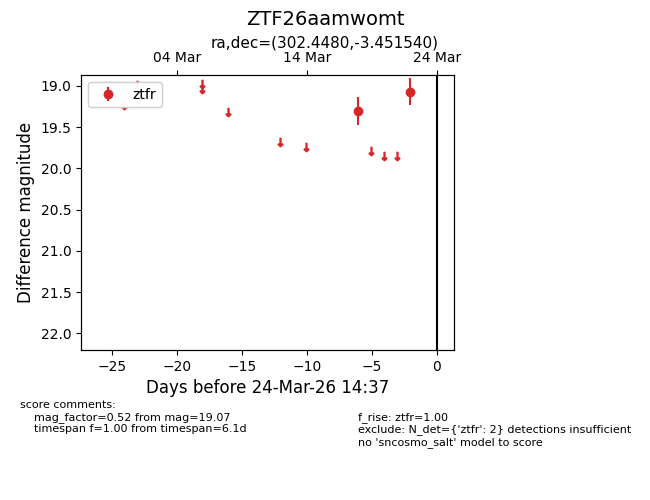
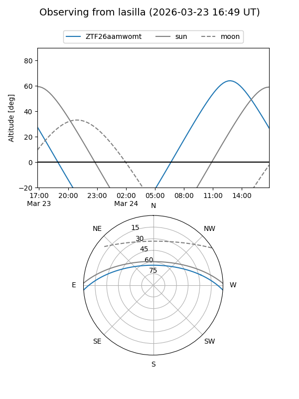
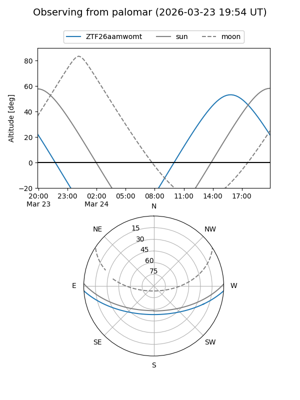

ZTF26aamwomt
Target ZTF26aamwomt at 2026-03-24 14:40
Aliases and brokers:
FINK: link
Lasair: link
ALeRCE: link
alt names
ZTF26aamwomt (ztf,fink_ztf)
Coordinates:
equatorial (ra, dec) = 302.4480,-3.45154
equatorial (HMS+DMS) = 20:09:47.52,-03:27:05.54
galactic (l, b) = (38.9424,-18.98321)
Flags:
Photometry:
last ztfr=19.07
2 ztfr detections
Lightcurve

Visibility


Additional plots